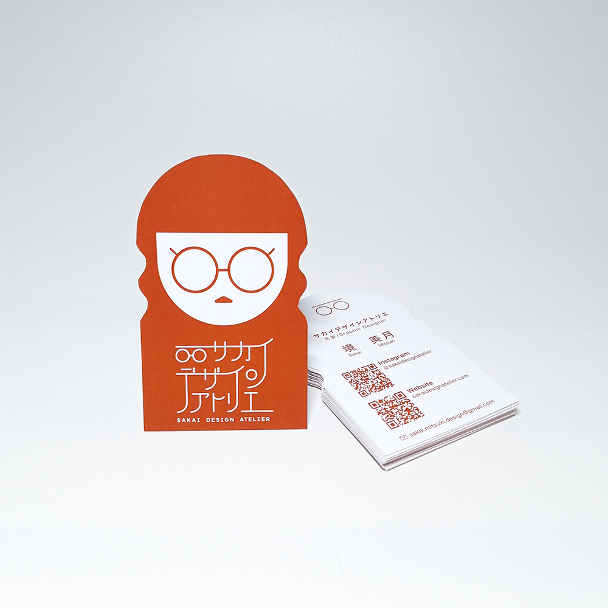

名刺デザイン
サカイデザインアトリエ 名刺
サカイデザインアトリエの名刺は、デザイナーである私自身の顔をモチーフにそのまま名刺の形状に落とし込んだオリジナル名刺です。
一般的な名刺とは異なる印象的なシルエットでありながら、サイズは標準規格内に収めることで、名刺入れやカードケースにも収納しやすく、受け取った後も管理しやすい設計としました。
ブランドの世界観を視覚的に伝えるだけでなく、「どうしてこの形なんですか？」「面白い名刺ですね」といった自然な会話のきっかけを生み出します。初対面の緊張を和らげ、思わずクスッと笑ってしまうような体験を通して、その後のコミュニケーションがより円滑に進むことを目指しました。
名刺を単なる連絡先ツールではなく、ブランドの第一印象を形づくるコミュニケーションツールとしてデザインしています。